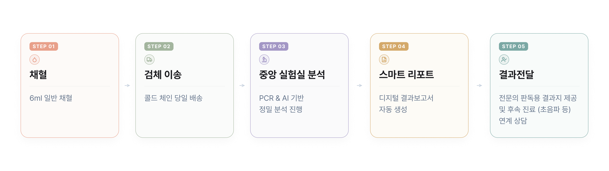
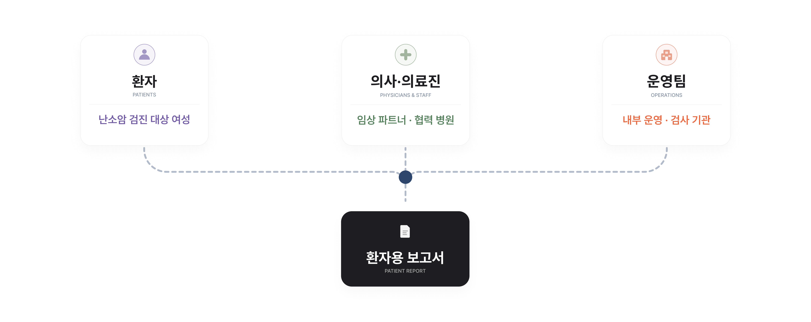
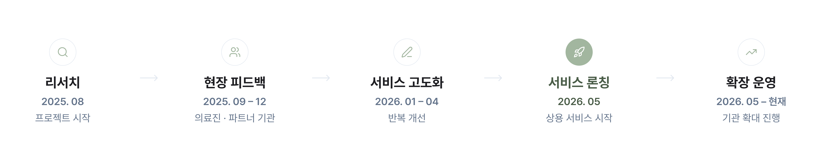
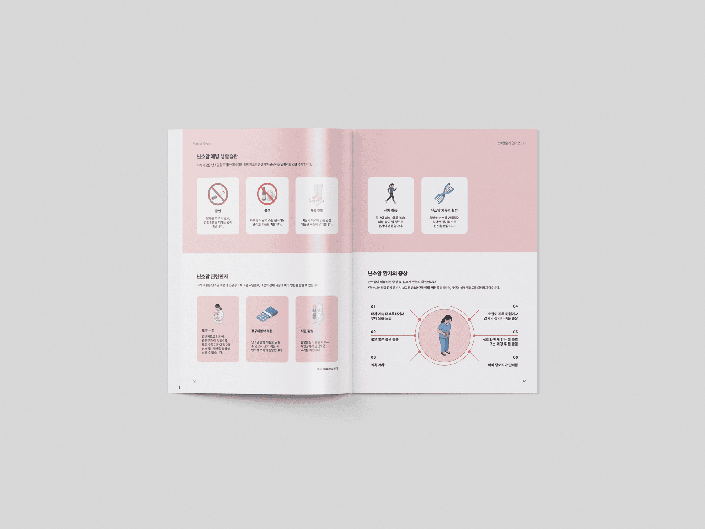
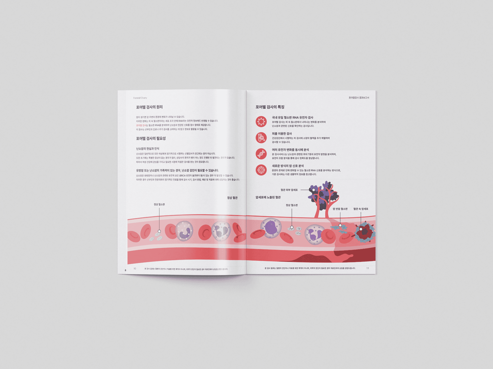

Foretell Ovary는 다양한 임상 채널에서 운영되는 난소 건강 위험도 검사 서비스입니다. AI 기반 혈액 검사 결과와 유전자 신호를 환자가 이해할 수 있는 언어와 시각 구조로 바꾸고, 실제 임상 운영에 맞춰 개인화 보고서를 안정적으로 생성할 수 있는 제작 흐름까지 함께 설계했습니다.
2025년 8월 - 현재
Product Designer, Developer
Foretell Ovary는 다양한 임상 채널을 통해 운영되는 난소 건강 위험도 검사 서비스입니다. 환자의 진료 현장에서 채혈이 이루어지고, 혈액은 실험실로 이송되어 분석된 후 결과가 환자 보고서로 정리되어 의료 기관을 통해 전달됩니다.
채혈, 실험실 분석, 결과 생성까지 이어지는 긴 과정 속에서, 보고서는 환자가 자신의 건강 정보를 처음 마주하는 접점이 됩니다. 이 프로젝트는 복잡한 의료 데이터를 환자가 이해할 수 있는 경험으로 바꾸는 작업이었습니다.

보고서는 여러 이해관계자와 분석 시스템을 거쳐 환자에게 전달됩니다. 환자 경험을 설계한다는 것은, 각 주체가 같은 정보를 어떻게 활용하는지 이해하고, 서로 다른 요구를 하나의 결과물 안에 통합하는 과정이었습니다.
건강검진을 위해 검사를 받은 일반 사용자입니다. 의학적 배경 지식이 없는 경우가 많아, 보고서가 결과를 이해하고 다음 행동을 결정하는 주요 안내 역할을 합니다.
보고서를 전달하고 환자의 질문에 응답하는 의료진입니다. 환자 친화적이면서도 임상적으로 신뢰할 수 있는 표현과 정보 구조가 필요했습니다.
내부 운영팀이 결과 생성과 배포를 관리합니다. 보고서는 개별 환자 경험을 넘어, 반복 가능하고 자동화할 수 있는 운영 구조를 지원해야 했습니다.

이 검사는 AI 기반 위험도 점수와 난소암 관련 유전자 마커 패널을 함께 분석합니다. 기존 실험실 결과지는 수치만 나열되어 있어, 의학적 배경 지식이 없는 환자가 자신의 결과를 해석하기 어려웠습니다.
맥락 없이 결과를 받은 환자들은 결국 인터넷을 찾게 됩니다. 저위험 결과를 보고 불필요하게 불안해하거나, 정작 추적 관찰이 필요한 신호를 그냥 지나치는 경우가 생깁니다.
대부분의 점수가 좁은 범위에 분포하기 때문에, 숫자 자체를 강조하면 작은 차이도 위협적으로 느껴질 수 있었습니다. 절대적인 수치보다 임상 기준 안에서 자신의 위치를 직관적으로 이해할 수 있도록 설계해야 했습니다.
유전자 신호를 양호 / 관심 / 주의의 세 단계로 전달해야 했습니다. 유전학 지식 없이도 이해할 수 있으면서, 임상적 의미를 과장하거나 축소하지 않는 균형이 필요했습니다.

서비스 개시 전 2025년 8월부터 2026년 4월까지 여러 차례의 설계 개선을 거쳤습니다. 실제 환자 데이터, 임상 문헌, 임상의 및 연구팀의 전문가 피드백을 바탕으로 보고서 언어, 위험 수준 정의, 임상 소견 문구를 조정했습니다.
Foretell Ovary는 2026년 5월 상용 서비스를 개시했으며, 현재 여러 임상 사이트에서 활용되고 있습니다.
서비스 개시 전부터 실제 보고서를 발행 전 검토하며 개선했습니다. 실제 데이터는 가상의 테스트에서 발견하지 못했던 문제들을 드러냈습니다.
건강 위험 커뮤니케이션과 유전자 결과 해석 관련 문헌을 참고해 정보 구조와 표현 방식을 결정했습니다.
임상의와 연구팀이 위험 수준 정의와 환자 안내 문구를 함께 검토하며 임상적 정확성을 보완했습니다.

보고서는 새로운 사이트와 더 많은 환자에게 전달되면서 총 5차례의 이터레이션을 거쳤습니다. 위험도 시각화, 예방 가이드 레이아웃, 표지 디자인까지 매 라운드에서 종이 위에선 괜찮아 보였지만 실제 현장에선 다시 손봐야 하는 부분이 계속 드러났습니다.
그중 두 번의 이터레이션이 뚜렷한 전환점이었습니다. 숫자 중심 보고서에서 위치 기반 시각화로 이동한 시점입니다.
기하학적인 표지에 위험도를 숫자와 작은 지표로 표현한 초기 버전입니다. 유전자 결과는 DNA 일러스트와 함께 각 마커를 독립된 정보로 배치했습니다. 실제 검토 과정에서 숫자 중심 표현이 불안감을 줄 수 있고, 유전자 정보의 가독성이 떨어진다는 피드백이 나왔습니다.
위험도를 양호·관심·주의 구간이 표시된 컬러 바로 재구성했습니다. 환자가 숫자를 해석하는 대신 자신의 위치를 직관적으로 파악할 수 있도록 만든 것이 핵심 변화입니다. 유전자 표 역시 3단계 신호 체계에 맞춰 비교·판독하기 쉬운 구조로 재설계했습니다.
프로젝트 진행 중 연령별로 다르게 적용되던 유전자 패널이 공통 패널로 통합되었습니다. 이에 따라 보고서 구조와 환자용 설명 콘텐츠 역시 함께 수정되었습니다.


최종 결과물은 하나의 인쇄형 결과보고서입니다. 검사 결과뿐 아니라 난소암에 대한 설명, 검사 원리, 예방 생활습관, 관련 증상까지 한 문서 안에 담아, 환자가 자신의 결과를 이해하고 다음 행동을 결정할 수 있도록 구성했습니다.
위험도 시각화와 위험 수준별 임상 소견을 함께 제공하는 결과 섹션입니다.
난소암 설명, 검사 원리, 예방 생활습관과 증상 안내까지 한 보고서 안에 통합된 교육 섹션입니다.



환자가 원시 데이터를 해석하는 대신, 시각적 패턴으로 자신의 상태를 인식할 수 있도록 세 가지 설계 원칙을 중심으로 보고서를 재구성했습니다.
위험도 점수를 양호·관심·주의 구간이 표시된 컬러 바 위에 배치했습니다. 환자는 숫자를 해석하는 대신, 임상 기준 안에서 자신이 어디에 있는지 상대적으로 인식할 수 있습니다.
유전자 신호를 3단계(양호·관심·주의)로 통합해, 유전학 배경 없이도 신호 수준을 즉시 파악할 수 있게 했습니다. 각 유전자에는 신체에서 무엇을 감지하는지 짧은 설명을 함께 넣었습니다.
유전자 섹션 상단에 요약 지표(예: 양호 3/8, 관심 1/8, 주의 4/8)를 배치해, 환자가 개별 유전자를 살피기 전에 전체 상태를 한눈에 파악할 수 있도록 했습니다.
결과보고서는 "나의 체크리스트"로 마무리됩니다. 다음 진료 전에 자신의 증상과 진료 이력을 스스로 정리해볼 수 있는 자기 평가 섹션입니다.

보고서는 여러 임상 사이트에서 실제 환자에게 전달되고 있으며, 지속적으로 확장되고 있습니다. 복잡한 데이터를 일관된 구조로 정리해 환자와 의료진이 같은 기준으로 결과를 이해할 수 있도록 만들었습니다.
실제 환자에게 전달된 개인화 보고서 누적 건수로, 새로운 사이트가 온보딩되면서 지속적으로 증가하고 있습니다.
상용화 전 5차례의 이터레이션을 거치며 위험도 시각화, 유전자 신호 레이아웃, 예방 가이드를 실제 환자 데이터와 임상 피드백에 맞춰 다듬었습니다.
양호·관심·주의 3단계로 정리한 신호 체계로, 유전학 배경 없이도 환자와 의료진이 같은 기준으로 결과를 읽을 수 있습니다.
InDesign 데이터 병합 자동화를 구축해 구조화된 환자 데이터로부터 개인화 보고서를 안정적으로 대량 생성할 수 있도록 했으며, 배포 규모가 커지는 동안에도 품질을 일관되게 유지했습니다.
실제 환자 데이터를 다룬다는 것은 모든 결정을 더 신중하게 만든다는 의미였습니다. 잘못 쓰인 위험 범주나 헷갈리는 시각화는 단순한 UX 문제가 아니라, 환자가 자신의 건강에 대해 잘못된 이해를 갖고 돌아가는 일이 됩니다. 인쇄 전 모든 요소를 꼼꼼히 검토한 것도 그 무게 때문이었습니다.
보고서는 환자 경험뿐 아니라 이를 생산하고 관리하는 임상 운영 환경까지 고려해야 했습니다. 자동화된 PDF 생성 구조는 누락된 데이터와 예외 상황에서도 안정적으로 동작해야 했고, 서비스 운영과 사용자 경험이 서로 분리될 수 없다는 점을 배울 수 있었습니다.
같은 데이터를 어떻게 보여주느냐에 따라 환자가 느끼는 결과의 무게가 달라졌습니다. 숫자를 그대로 노출하는 것보다, 임상 기준 안에서 자신의 위치를 보여주는 것이 훨씬 더 명확하고 안정적인 이해로 이어졌습니다.
다음 단계로는 환자 이해도를 정식으로 검증하는 리서치와, 정적인 인쇄 보고서를 넘어 환자가 결과와 상호작용할 수 있는 디지털 형태로 확장하는 방향을 고려하고 있습니다.